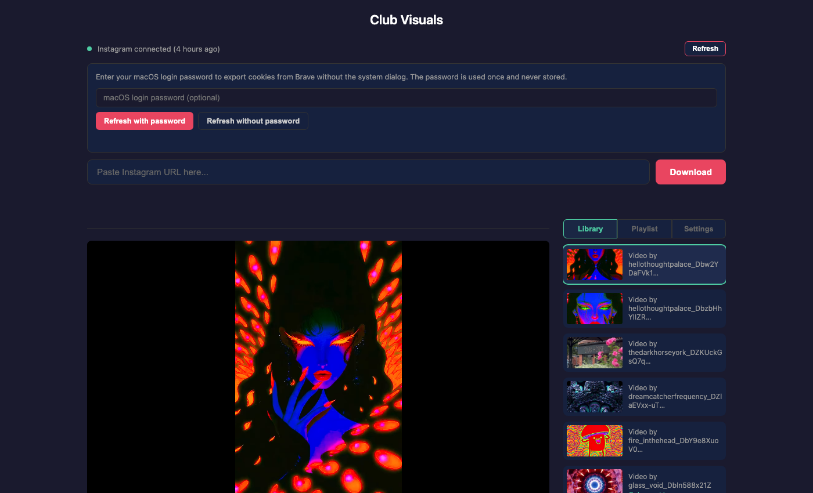

Downloading Videos
Club Visuals downloads Instagram reels and posts using yt-dlp with your browser's login cookies. This chapter covers the Instagram connection, cookie management, and the download workflow.
Instagram connection
The connection indicator at the top of the app shows whether Club Visuals can authenticate with Instagram:
- Green dot — connected, cookies are fresh (shows how long ago they were exported)
- Amber dot — cookies exist but have expired (older than 7 days)
- Red dot — no cookies found, connection needed

02-connection-panel.png).Refreshing cookies
Click the Connect / Refresh / Reconnect button (label changes based on state) to expand the connection panel. You have two options:
With password (recommended)
- Enter your macOS login password in the password field
- Click Refresh with password
- Club Visuals unlocks the macOS Keychain silently and exports cookies from Brave — no system dialog appears
- The panel auto-closes on success and the connection dot turns green
Without password
- Click Refresh without password
- macOS will show a system Keychain dialog asking for permission
- Enter your password in the system dialog and click Allow
.cookies.txt and contains your Instagram session tokens.
Cookie lifetime
Exported cookies are cached for 7 days. During that time, downloads use the cached cookie file without prompting for Keychain access. Instagram sessions typically last weeks, so a weekly refresh is usually sufficient.
If a download fails due to an expired Instagram session, Club Visuals will automatically attempt one silent cookie refresh and retry. If the retry also fails, the connection panel opens with a message asking you to refresh manually.
Downloading a video
- Copy an Instagram reel or post URL from your browser or the Instagram app
- Paste it into the URL input field at the top of the app
- Click Download or press Enter
- Watch the progress: "Starting yt-dlp...", "Downloading... 45%", "Merging audio and video...", "Download complete!"
- The video automatically loads in the player and appears in the library
Videos are saved as MP4 files in the download directory along with a .info.json metadata file containing the channel name, description, and upload date.
CLI download
You can also download from the command line:
./ig-save.sh https://www.instagram.com/reel/ABC123/This uses the same cookie file and saves to the same download directory.
Troubleshooting
| Problem | Solution |
|---|---|
| "Instagram login required" | Open Brave, make sure you are logged into Instagram, then refresh cookies from the connection panel |
| "yt-dlp not found" | Install yt-dlp: brew install yt-dlp |
| Red dot — "Server not reachable" | The server may not be running. Start it with ./start.sh |
| Download fails but cookies are green | The URL may be invalid, the post may be private, or Instagram may have changed their API. Try updating yt-dlp: brew upgrade yt-dlp |